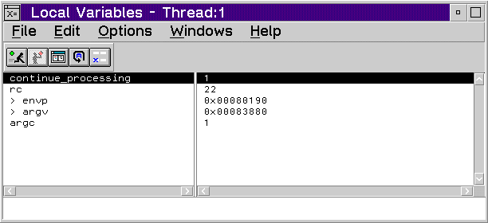

Using the Local Variables Window
The Local Variables window monitors the local variables (static, automatic,
and parameters) for the current execution point in the program. The contents
of the Local Variables window change each time your program enters or leaves
a function.
- For a description of the choices that are available
from the File menu, refer to File
Menu Choice.
- For a description of the choices that are available
from the Edit menu, refer to Edit
Menu Choices.
- For a description of the choices that are available
from the Options menu, refer to Options
Menu Choices.
- For a description of the choices that are available
from the Windows menu, refer to Windows
Menu Choices.
- For a description of the choices that are available
from the Help menu, refer to Help
Menu Choices.
[Back: Help Menu Choices]
[Next: File Menu Choice]